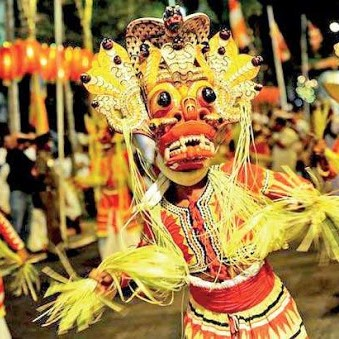
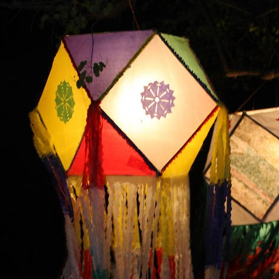
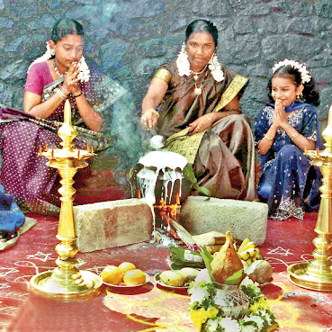
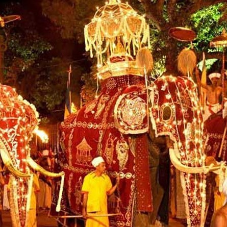

➖ Experience the Taste of Sri Lanka ➖
🔸 Kandy Esala Perahera 🔸

The Kandy Esala Perahera also known as The Festival of the Tooth is a festival held in July and August in Kandy, Sri Lanka. This historical procession is held annually to pay homage to the Sacred Tooth Relic of Lord Buddha, which is housed at the Sri Dalada Maligawa in Kandy.
🔸 Wesak 🔸

Vesak, also known as Buddha Jayanti, Buddha Purnima and Buddha Day, is a holiday traditionally observed by Buddhists and some Hindus in South and Southeast Asia as well as Tibet and Mongolia. The festival commemorates the birth, enlightenment, and death of Gautama Buddha in Theravada and Tibetan Buddhism.
🔸 Christmas 🔸
Christmas is an annual festival commemorating the birth of Jesus Christ, observed primarily on December 25 as a religious and cultural celebration among billions of people around the world.
🔸 Thai Pongal 🔸

Pongal, is also referred to as Thai Pongal, is a multi-day Tamil harvest festival of South India, particularly in the Tamil community. It is observed at the start of the month Tai according to Tamil solar calendar, and this is typically about January 14.
🔸 Sinhala and Tamil New Year 🔸

Sinhalese New Year, generally known as Aluth Avurudda in Sri Lanka, is a Sri Lankan holiday that celebrates the traditional New Year of the Sinhalese people in Sri Lanka. It is a major anniversary celebrated by not only the Sinhalese people but by most Sri Lankans.
🔸 Kataragama Festival 🔸

The Kataragama Perehera is held in the months of July/August and is a festival that coincides with the new Moon in the Esala month. This two-week Perahera attracts thousands - Hindus and Buddhists -, many of who make the pilgrimage on foot from as far afield as Jaffna in Sri Lanka's northern peninsula.